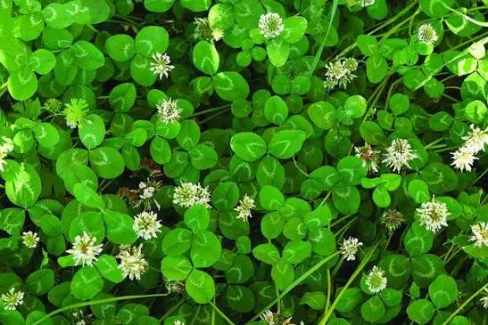

Can Chickens Eat White Clover? Growing White Clover for Chickens
White clover is a low-growing perennial legume that can provide tender leaves, living forage, pollinator habitat, nitrogen fixation, and repeated growth for managed backyard chicken areas. This guide explains how to establish it, protect it from scratching, rotate flock access, harvest clean forage, and use white clover safely as a supplement.
☘️ Can Chickens Eat White Clover?
Yes. Chickens can eat clean white clover leaves, tender stems, and flowers as supplemental forage. They may graze established plants, eat freshly clipped clover, or receive small amounts of properly dried leaf material.
Fresh clover is generally the most practical form because it provides moisture, tender leaves, and natural pecking enrichment. Harvest only clean plants that have not been exposed to unsafe herbicides, pesticides, road contamination, mold, manure buildup, or unidentified weeds.
White clover may be offered in several ways:
- Controlled grazing: Allow short access periods to an established patch and remove the flock before scratching and close grazing expose bare soil.
- Cut-and-carry forage: Clip clean upper leaves and tender stems from a protected patch and offer only what the flock will consume promptly.
- Flowers: Chickens may peck white clover flowers along with the leaves when the plants are clean and untreated.
- Dried clover: Small quantities may be dried rapidly and thoroughly, but dried forage is more concentrated and should be offered sparingly.
- Mixed pasture: White clover may be grazed alongside suitable grasses and other safe forage plants.
White clover does not provide enough concentrated energy, balanced amino acids, calcium, vitamins, or minerals to replace chick starter, grower feed, layer feed, or another complete poultry ration. Do not feed moldy, slimy, fermented, chemically contaminated, or decomposing clover.
☘️ Is White Clover a Good Crop for Chickens?
White clover is a low-growing perennial legume commonly found in pastures, lawns, orchards, and mixed forage stands. It spreads through creeping stems called stolons, which can root at their nodes and create a connected mat of growth.
For backyard chicken keepers, an established white clover patch may provide:
- Fresh leaves and tender forage
- Repeated growth after light grazing or cutting
- Living ground cover
- Soil protection and reduced erosion
- Flowers for bees and other pollinators
- Nitrogen fixation when compatible bacteria are present
- A perennial crop that does not require yearly replanting
- Foraging and pecking activity
Its main limitation is durability. Chickens do more than eat leaves—they scratch, dig, dust bathe, and expose roots. An unprotected clover patch inside a heavily used run may disappear even though white clover tolerates ordinary mowing and grazing.
Is This Crop Right for Your Flock and Backyard?
Crop success depends on more than whether chickens can eat it. Climate, growing space, sunlight, soil, water, labor, processing, equipment, harvest goals, and storage all affect whether it is a practical choice for your property.
🌱 Use the Feed Crop Planner →📋 White Clover Quick Facts
🌱 Which Type of White Clover Should You Grow?
White clover varieties are often grouped by plant size. The categories overlap, but they provide a useful starting point when selecting seed.
Small White Clover
Small types stay close to the ground and may tolerate close grazing well.
Their leaves are smaller, and total forage production may be lower than larger varieties.
Intermediate White Clover
Intermediate types balance grazing tolerance, leaf size, persistence, and forage production.
They are often a practical choice for mixed-use pasture or backyard forage areas.
Ladino Clover
Ladino types are large-leaved white clovers selected for greater forage production.
They may provide more leaf material but can be less tolerant of very close, continuous grazing than smaller types.
Choose an intermediate white clover variety recommended for your region. It usually offers a useful compromise between leaf production, persistence, spreading ability, and grazing tolerance.
🗓 When to Plant White Clover
White clover is usually established during cool, moist conditions rather than during severe heat or drought.
Depending on region, practical planting windows may include:
- Late winter frost seeding into an existing thin pasture
- Early spring planting
- Late summer or early fall planting where seedlings can establish before winter
- Cool-season planting in mild-winter regions
| Region | General Planting Approach | Expected Growth Pattern |
|---|---|---|
| Cold North | Frost seed in late winter or plant in early spring. Late-summer planting may work when enough establishment time remains before freezing. | Strongest growth during spring and early summer, with slower growth during severe heat or winter. |
| Midwest and Northeast | Plant in early spring or late summer when moisture is dependable and weed competition can be controlled. | Spring and fall growth, with summer performance depending on rainfall and temperature. |
| Upper South | Plant in early spring or early fall. Fall planting may allow establishment before the following summer. | Strong cool-season growth with possible summer slowing during heat and drought. |
| Deep South | Plant during the cool season, commonly in fall, where white clover is regionally adapted. | Fall through spring growth, followed by decline or dormancy during intense summer heat. |
| Southwest | Plant during a mild season when irrigation is available. White clover may struggle with severe heat, drought, and alkaline or saline conditions. | Best growth during cooler irrigated periods. |
| Pacific Northwest | Plant in spring or early fall when moisture is dependable. | Extended growth where summers are mild and soil moisture remains adequate. |
| Coastal West | Plant during cool, moist weather. Irrigation may extend growth through dry summers. | Potentially long production season in mild climates. |
Regional Extension recommendations should guide the final planting date because white clover establishment varies with winter severity, summer heat, rainfall, irrigation, and intended use.
📐 How Much White Clover Should You Plant?
White clover is normally planted by seed weight per area rather than by spacing individual plants.
The exact rate depends on whether the clover is:
- Planted as a pure stand
- Mixed with grass
- Overseeded into an existing lawn or pasture
- Frost seeded
- Planted with coated or uncoated seed
- Intended as living mulch, grazing forage, or ground cover
White clover spreads through stolons that root at their nodes. One original seedling can create many connected growing points, so mature “plants per square foot” is not a clear or dependable measurement.
Follow the seed supplier’s rate for the chosen variety and planting system. Avoid increasing the rate simply because the seed looks small. Overly dense seeding can waste seed and increase early competition.
🪴 How to Plant White Clover
- Choose an appropriate site. Select an area with adequate light, moisture, drainage, and protection from continuous chicken traffic during establishment.
- Test the soil. Correct severe acidity and major nutrient deficiencies according to soil-test recommendations.
- Control existing weeds. Reduce thick grass, broadleaf weeds, and thatch that would prevent the tiny seed from reaching soil.
- Prepare a firm seedbed. The soil should be smooth and firm rather than deeply loose and fluffy.
- Sow very shallowly. Broadcast the seed onto the surface or cover it only lightly. Clover seed planted too deeply may fail to emerge.
- Press the seed into contact with soil. Use a roller, board, or gentle foot pressure without burying it deeply.
- Maintain moisture during establishment. Prevent the shallow seed zone from repeatedly drying before seedlings develop roots.
- Exclude chickens until the stand is established. Young seedlings can be scratched out or eaten immediately.
🌱 Does White Clover Need Inoculant?
White clover can fix atmospheric nitrogen through a relationship with compatible Rhizobium bacteria in root nodules.
If the site has not recently supported white clover or related inoculated legumes, using the correct clover inoculant may improve nodulation.
When using inoculant:
- Choose a product labeled for white clover.
- Check the expiration date.
- Protect inoculant from heat and direct sunlight.
- Apply it according to the label.
- Plant treated seed promptly.
- Do not assume that every legume inoculant contains the correct bacteria.
Nitrogen fixation does not eliminate the need for suitable soil pH, phosphorus, potassium, sulfur, and other nutrients.
💧 Watering White Clover
White clover performs best with dependable moisture. Established plants may survive temporary dry periods, but drought can reduce leaf production, flowering, stolon growth, and recovery after grazing.
Water is especially important during:
- Germination
- Early seedling development
- Stolon establishment
- Recovery after grazing or cutting
- Hot, dry weather
Avoid keeping the soil continuously waterlogged. Poor drainage may weaken roots, reduce persistence, and increase disease pressure.
🌿 How White Clover Spreads
White clover produces horizontal creeping stems called stolons. These stems grow across the soil surface and may form roots at their nodes.
This growth habit allows an established patch to:
- Fill small bare areas
- Recover from light grazing
- Create a low leafy mat
- Persist despite the loss of some individual rooted sections
- Spread beyond the original planting area
White clover may move into lawns, paths, garden beds, or neighboring areas. Use borders, mowing, edging, or isolated forage plots where spread would create a problem.
🐔 Can White Clover Grow Inside a Chicken Run?
It can sometimes survive in lightly stocked or rotational areas, but a permanent bare chicken run is a difficult environment for any living ground cover.
Chickens may damage white clover by:
- Eating leaves faster than they regrow
- Scratching through stolons and roots
- Creating dust-bathing holes
- Compacting wet soil
- Concentrating manure around feeders and waterers
- Trampling young seedlings
The heavier the stocking rate and the smaller the run, the less likely a clover stand is to survive without protection.
🛡 Better Ways to Protect a Clover Forage Patch
Rotational Paddocks
Divide the forage area into sections and allow chickens into only one section at a time.
Rest grazed sections until leaves and stolons recover.
Forage Frames
Cover an established patch with sturdy wire mesh raised above the soil.
Chickens can peck growth that reaches through the mesh without scratching out the roots.
Cut-and-Carry Harvest
Grow white clover outside the run and clip clean foliage for the flock.
This provides the greatest control over harvest frequency and stand recovery.
✂️ Harvesting White Clover by Hand
White clover may be clipped and carried to the flock when the stand is clean, actively growing, and free from unsafe pesticide residues.
- Wait until the stand is established. Do not cut newly germinated seedlings before stolons and roots develop.
- Harvest clean upper growth. Avoid clipping soil, manure, mud, or decomposing material.
- Leave adequate leaf area. Do not scalp the stand down to bare stems and soil.
- Harvest only part of the patch. Rotate clipping areas so plants can recover.
- Inspect the forage. Remove weeds, foreign objects, moldy material, and heavily damaged leaves.
- Offer only what the flock will use promptly. Do not allow wet piles of clover to heat, ferment, or rot in the run.
🔄 Managing Regrowth After Grazing
White clover can regrow after cutting or grazing because low-growing stolons and rooted nodes may remain intact.
To support recovery:
- Remove chickens before the patch is grazed to bare soil.
- Allow new leaves to develop before grazing again.
- Maintain adequate soil moisture.
- Avoid traffic when soil is saturated.
- Control competing weeds and overly tall grass.
- Do not repeatedly scalp the same section.
Recovery time depends on temperature, moisture, season, variety, fertility, stand health, and the severity of grazing.
🐝 White Clover Flowers and Pollinators
White clover flowers provide nectar and pollen for honey bees, bumblebees, and other insects.
This can be valuable for garden biodiversity, but flowering clover inside or beside a frequently used walkway may increase the chance of a person stepping on a bee.
Consider:
- Whether household members have severe sting allergies
- Whether children play barefoot in the area
- Whether the clover borders doors, gates, or narrow pathways
- Whether mowing some sections before heavy flowering is appropriate
- Leaving other sections to bloom for pollinators
🐔 How to Feed White Clover to Chickens
White clover may be offered in several forms:
- Controlled grazing of established plants
- Freshly clipped leaves and tender stems
- Small bundles placed in a clean forage holder
- Mixed fresh pasture growth
- Dried leaf material in limited amounts
Chickens may select the tender leaves while leaving tougher stems or flower stalks.
Clover forage does not provide the concentrated energy, balanced amino acids, calcium, vitamins, and minerals required for a complete poultry ration. Continue offering an age-appropriate complete feed.
🥗 White Clover Nutrition for Chickens
White clover can be relatively nutritious forage on a dry-matter basis, but fresh plants contain substantial water. Nutrient values vary with variety, maturity, soil fertility, season, weather, and the amount of stem included.
| Nutritional Feature | General Contribution | Important Limitation |
|---|---|---|
| Crude protein | Can be relatively high in young leafy forage on a dry-matter basis | Fresh forage is moisture rich and does not supply a balanced poultry amino-acid profile by itself. |
| Fiber | Supports forage structure | Fiber increases as stems mature and may reduce usable nutrient density. |
| Carotenoids | Young green leaves may provide plant pigments | Actual intake and yolk response depend on the complete diet. |
| Calcium | Leafy legumes may contain measurable calcium | Does not replace formulated layer feed or an appropriate calcium source. |
| Moisture | Provides fresh succulent forage | Fresh weight should not be compared directly with dry bagged feed. |
Young leafy clover usually has greater feeding value than old, weathered, stem-heavy growth. Even high-quality forage should remain one component of a balanced feeding system.
⚠️ White Clover Feeding and Safety Limitations
- Do not use white clover as the flock’s complete ration.
- Do not feed moldy, slimy, fermented, or decomposing clover.
- Do not feed forage contaminated with unsafe pesticide or herbicide residues.
- Do not harvest from roadsides or areas exposed to unknown chemicals.
- Do not include unidentified weeds in cut forage.
- Do not leave large wet piles where they may heat or spoil.
- Introduce access gradually when chickens have not previously grazed fresh forage.
- Continue supplying grit when appropriate for the flock’s age and feeding system.
- Do not assume forage calcium meets the requirements of laying hens.
- Use caution where white clover spreads into areas where it is unwanted.
White clover populations vary in plant chemistry. This is another reason to treat the crop as moderate supplemental forage rather than a major concentrated feed ingredient.
🌱 Can White Clover Be Mixed with Grass?
White clover is often planted with pasture grasses rather than as a pure stand.
A mixed stand may provide:
- Greater ground coverage
- More durable footing
- A balance of grass and legume forage
- Reduced erosion
- More seasonal resilience
- Less dependence on nitrogen fertilizer for the grass
However, a dense or tall grass stand can shade out young clover. Management must allow enough light to reach the low-growing clover leaves.
For a chicken forage area, the ideal mixture depends on climate, soil, drainage, traffic, and how often the paddock can rest.
🐛 Common White Clover Problems
| Problem | What You May Notice | Possible Response |
|---|---|---|
| Poor establishment | Thin seedlings or bare patches | Improve seed-to-soil contact, avoid deep planting, maintain moisture, and reduce competition. |
| Heavy chicken damage | Exposed soil, broken stolons, or missing leaves | Remove chickens, rest the patch, use a forage frame, or rotate paddocks. |
| Summer drought | Slow growth, wilted leaves, or dormant patches | Irrigate where practical, reduce grazing pressure, and allow recovery during cooler weather. |
| Grass competition | Clover becomes sparse beneath tall grass | Mow or graze grass appropriately and maintain enough light at clover height. |
| Weed invasion | Broadleaf weeds or coarse grasses dominate the patch | Identify weeds correctly and use controls compatible with clover and poultry access. |
| Poor nodulation | Weak growth despite suitable moisture | Check soil pH and fertility and consider whether correct inoculation was used. |
| Unwanted spreading | Stolons move into beds, paths, or lawn areas | Use edging, mowing, hand removal, or isolated planting zones. |
📊 Is White Clover Worth Growing for Chicken Forage?
White clover may be worthwhile when the goal is to create a living forage system rather than harvest pounds of stored feed.
Potential benefits include:
- Perennial growth
- Repeated grazing or clipping
- Low-growing ground cover
- Pollinator support
- Nitrogen fixation
- Soil protection
- Compatibility with mixed pasture
- Natural pecking and foraging opportunities
Its main disadvantages are slow establishment, poor survival under continuous chicken pressure, lower summer performance in hot dry regions, limited storage value, and the possibility of spreading beyond the intended area.
White clover is best viewed as a managed living-forage crop—not as a dependable replacement for purchased feed.
☘️ A Simple Beginner White Clover Plan
For a first trial, establish a protected patch of approximately 25–50 square feet outside the flock’s permanent high-traffic area.
- Choose an intermediate white clover suited to your region.
- Test and prepare the soil.
- Plant during a cool, moist season.
- Use the seeding rate listed for a small pure stand.
- Press the seed firmly against the soil without burying it deeply.
- Keep chickens off the patch during establishment.
- Allow stolons to spread and root.
- Clip a small amount for the flock after the stand is secure.
- Later, test brief rotational access or install a forage frame.
- Record how quickly the patch recovers.
This trial will reveal whether white clover can persist under your climate, soil, moisture, and flock pressure before you establish a larger area.
❓ Frequently Asked Questions
Can chickens eat white clover?
Yes. Chickens can eat clean white clover leaves, tender stems, and flowers as supplemental forage. White clover should complement a complete poultry ration rather than replace it.
Can chickens eat clover flowers?
Yes. Chickens may peck white clover flowers along with the leaves and tender stems. Offer only clean, untreated plants that are free from mold, manure buildup, roadside contamination, and unidentified weeds.
Can chickens eat dried white clover?
Yes, in small amounts. White clover may be dried for later use, but it must be dried rapidly and thoroughly to prevent heating and mold. Dried forage is more concentrated than fresh clover and should be offered sparingly.
Can baby chicks eat white clover?
Baby chicks should receive a complete chick starter feed as their primary diet. Small amounts of finely chopped, clean clover may be introduced only after chicks are established on starter feed and are old enough to safely consume supplemental forage.
Can chickens eat white clover every day?
Chickens may graze or receive small amounts of white clover regularly, but it should remain supplemental. Continuous access can also damage the plants through close grazing, scratching, trampling, and soil disturbance.
Will white clover survive in a chicken run?
It may survive light or rotational access, but continuous scratching and grazing commonly destroy an unprotected stand. Protected forage frames, rotational paddocks, or cut-and-carry harvesting are generally more dependable.
Does white clover grow back after chickens graze it?
Established white clover can regrow from creeping stolons and rooted nodes when enough leaf area remains and the patch receives adequate moisture and rest. Repeated grazing down to bare soil may prevent recovery.
How long should white clover rest after grazing?
There is no single fixed rest period. Recovery depends on temperature, moisture, season, variety, soil fertility, and how heavily the patch was grazed. Allow new leaves to develop before returning chickens to the area.
Should white clover be planted by spacing individual plants?
No. White clover is normally broadcast or shallow-seeded according to a recommended seeding rate. Mature plant density is difficult to measure because stolons spread and root at multiple nodes.
Can white clover be planted with grass?
Yes. White clover is commonly grown with pasture grasses. A mixed stand can provide more durable ground cover and seasonal forage, but the grass must be managed so it does not become tall and dense enough to shade the clover.
Does white clover fix nitrogen?
Yes. White clover can form nitrogen-fixing root nodules when compatible Rhizobium bacteria are present and soil conditions are suitable. Inoculant may be useful where clover has not recently grown.
Does white clover need full sun?
White clover grows best in full sun but can tolerate some partial shade. Heavy shade usually reduces flowering, leaf production, spreading, and recovery after grazing.
Is white clover safe after herbicide or pesticide use?
Only when the product label specifically permits the intended forage or poultry use and all required waiting periods have passed. Do not feed clover from areas treated with unknown chemicals or products not labeled for forage.
Can moldy or fermented white clover be fed to chickens?
No. Do not feed clover that is moldy, slimy, heated, unintentionally fermented, decomposing, or foul smelling. Wet piles of clover should be removed before they spoil.
Can white clover replace chicken feed?
No. White clover provides fresh forage and enrichment but does not supply enough concentrated energy, balanced amino acids, calcium, vitamins, or minerals to replace complete poultry feed.
Will white clover lower my chicken feed bill?
It may provide fresh forage and enrichment, but savings depend on stand size, growing season, flock pressure, recovery time, and how much balanced feed remains necessary. Its greatest value may be as a living forage and soil-support crop rather than a major feed replacement.
🌱 Explore More Feed Crops
🧰 Helpful Chicken Planning Tools
📚 Research Sources
This guide was developed from university Extension forage guidance, USDA plant resources, established forage references, and the Backyard Chicken Planner feed-crop database.
Used for variety groups, establishment, seeding, soil fertility, inoculation, grazing management, and persistence.
Used for white-clover growth habit, variety differences, establishment, forage use, and management.
Used for plant characteristics, adaptation, conservation uses, forage value, and establishment context.
Used for taxonomy, distribution, introduced status, and regional occurrence.
Used for balanced-ration principles and the role of pasture and garden forage as supplemental poultry food.